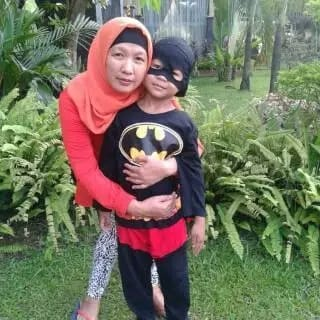

58
tahun perjalanan penuh cinta
Cerita di balik senyum Mamah
Tentang Mamah
58 tahun perjalanan telah membawa begitu banyak cerita. Dalam setiap fase kehidupan, Mamah selalu hadir sebagai sumber kekuatan, perhatian, dan kasih sayang bagi keluarga.
Terima kasih, Mamah. Untuk setiap doa yang tidak pernah putus, untuk pengorbanan yang tidak pernah dihitung, dan untuk cinta yang tidak pernah berhenti tumbuh.
Hari ini kami merayakan Mamah — perempuan hebat yang selalu menjadi rumah bagi kami semua.
Ibu Terbaik
Sahabat Sejati
Rumah Keluarga